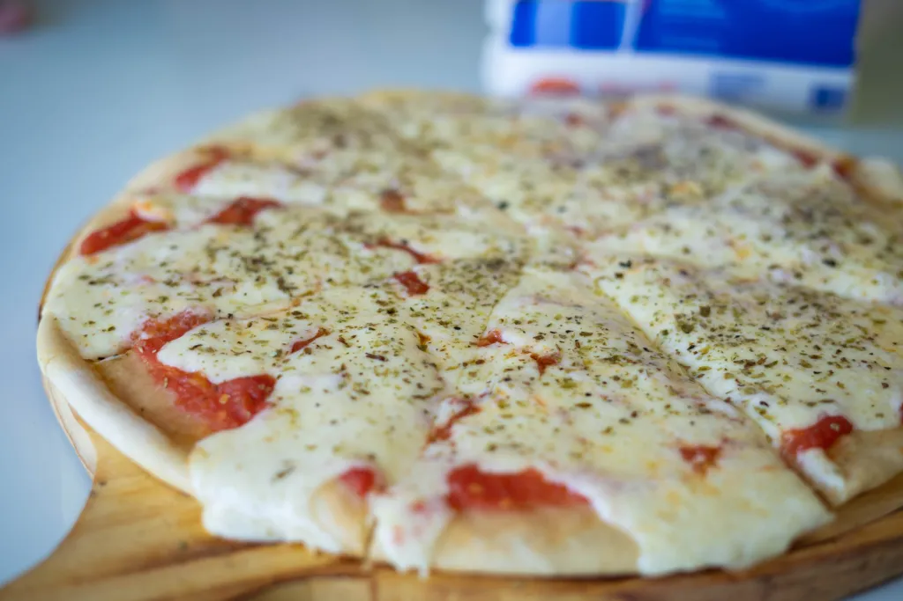

Pizza Casera

PARA 2 PIZZAS GRANDES
Ingredientes para la masa:
1k de harina
1 sobre de 10g de levadura seca
1/2 cucharada de sal
1 cucharadita de azucar
1 taza de leche tibia o agua
400 g de queso dambo o muzzarela
Ingredientes para la salsa:
1 cebolla grande
1/2 morrón
2 tomates grandes o 4 chicos
Pulpa de tomate
Sal y orégano
Preparación de la masa:
Mezclar en un bol la harina, levadura, sal y azucar.
Hacer un hoyo en el centro. Agregar el aceite y la leche o el agua de a poco hasta formar una masa que no se pegue en las manos.
Colocar la masa sobre la mesada.
Amasar por algunos minutos hasta que quede lisa y blanda.
Tapar y dejar que duplique su volúmen, aproximadamente 1 hora.
Luego dividir en dos y colocar en fuentes para pizza.
Dejar leudar unos 15 minutos.
Preparación de la salsa:
En una sartén a fuego medio, poner una cucharada de aceite y agregar la cebolla hasta que quede transparente. Agregar el morrón.
Cortar el tomate en cubos e incorporar a la salsa.
Dejar cocinar y condimentar a gusto con orégano, pimienta y sal.
Por último agregar la pulpa de tomate, cocinar por algunos minutos.
Por último:
Calentar el horno a 200 grados y llevar la pizza con la salsa por 20 minutos.
Cuando este pronta sacarla del horno, agregar el queso y volver a ponerla en el horno hasta que el queso se derrita.